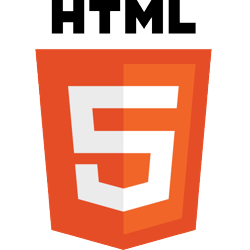
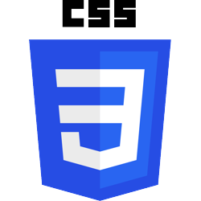

Mes compétences



Bienvenue sur ce portfolio. Je l'ai réalisé moi-même en code HTML et Bootstrap. Je vais vous décire ma personne ainsi que mon parcours, mes compétences.
Je m'appelle Cédric Fourny et je suis un habitué des ordinateurs depuis mes dix ans. Il a donc été évident pour moi de m'orienter dans le milieu vaste de l'informatique.
J'ai touché la programmation du bout des doights lors de mon année de Terminale afin de préparer mon baccalauréat STI2D en choisissant l'option SIN pour Systèmes Informatiques et Numériques.
Je suis passioné par beaucoup de sujets dont font partie l'Histoire et la science notamment dans le domaine de l'astronomie ainsi que la modélisaiton 3D et les jeux vidéos.
12 Décembre 1999
23 ans
2 ans post-baccalauréat
07 63 74 85 40
Collège des Tilleuls, Claye-Souilly 77410
Lycée Pierre de Coubertin, Meaux 77410
Université Paris-Est Marne-La-Vallée - Champs-sur-Marne 77420
CFA Ingetis, Paris 75005
Le BTS SIO (pour Service Informatique aux Organisations) est une formation professionnalisante qui apporte les bases pour comprendre, développer et délivrer une solution informatique adaptée à une entreprise.
Cette formation consiste en l'acquisition de compétences informatiques en réseau et développement au cours d'un tronc commun initial, suivit d'une spécialisation dans l'un des deux domaines. Le BTS ajoute la compréhension des objectifs et des besoins d'une entreprise afin de mieux orienter les solutions à apporter, en plus d'offrir des bases en matière de cybersécurité.
L'application Web consiste en un site internet permettant la consultation, l'ajout et la suppression d'informations provenant d'une base de donnée.
Cette application dipose d'une partie front-end conçue en HTML et CSS, et d'une partie back-end conçue en PHP avec une communication au serveur Apache par des requêtes SQL. Le serveur repose quant-à-lui sur le service de base de données MySql. Ce projet fut développé sur une période de 4 mois, de Septembre à Janvier.
GreenCube est une entreprise de prestations multiples aux entreprises. Leur catalogue de services est très varié puisqu'il regroupe informatique, réseau, sécurité et cybersécurité, télécommunication, systèmes d'impression, affichages dynamiques, de la vente de produits à la maintenance en passant par l'installation et la pose des matériels.
Mon stage en entreprise s'est déroulé à GreenCube de Juin à Juillet sur une durée de 6 semaines. En tant qu'assistant de responsable informatique, je vais y décrire les activités qui m'ont été confiées et ce que cette expérience m'a apportée.
Informations complémentaires:
Forme Juridique: SARL - CA: 79 500€ (2019)
Les missions qui nous étaient attribuées ne duraient pas plus d'une journée ou demi-journée de travail et consistaient en des tâches de soutient comme la livraison de matériels et de consommables ou encore l'assistance lors d'interventions chez des clients. Le stage s'étant déroulé pendant une période de faible activité, il est arrivé qu'aucune mission ne me soit attribuée certains jours.
Les instructions étaient transmises un jour auparavant en personne lorsque le responsable et moi étions présent dans l'établissement de l'entreprise. Sinon, les missions étaient attribuées par appel ou SMS. L'adresse du client m'était alors communiquée et nous planifions mon trajet afin que je puisse m'y rendre en faisant usage des transports en commun.
Les responsables faisaient usage de la suite Office 365 et notamment de Teams afin de communiquer entre eux et avec le secrétariat. En tant que stagiaires, nous n'avons pas reçu de compte Teams pendant nos périodes de stage respectives. Nous avons cependant été formé à l'usage basique des matériels auxquels nous avions accès. J'ai personnellement été formé à l'installation de périphériques lors des missions d'installation de matériel chez les clients et à la procédure de récupération d'un compte rendu sur des matériels déjà installés.
Bien que le stage m'a affecté à un poste effecutant des missions qui ne sont pas pertinentes avec ma formation, j'ai été intégré à une équipe technique nécessitant une structure cohérente et une organisation afin de diviser les tâches pour répondre aux missions. De plus, les missions consistaient à apporter ou appliquer une solution à une entreprise ce qui requiert de s'intéresser à ses besoins afin d'adapter la solution au client. En général, j'ai appris la structuration d'un groupe et l'organisation au sein d'une entreprise.
L'application bureau est une application capable de communiquer avec une ressource en ligne, en l'occurence une API, afin d'effectuer des requêtes, recevoir et traiter les informations reçues et enfin, les stocker dans une base de donnée.
Cette application est développée en code C# et dispose d'une interface visuelle en XAML. Le SQL est toujours utilisé quant aux interractions avec le serveur Apache. L'application doit être capable de traiter une information extérieure provenant d'une source en ligne, comme une API. Ce projet a été développé à partir de Janvier jusqu'a aujourd'hui.